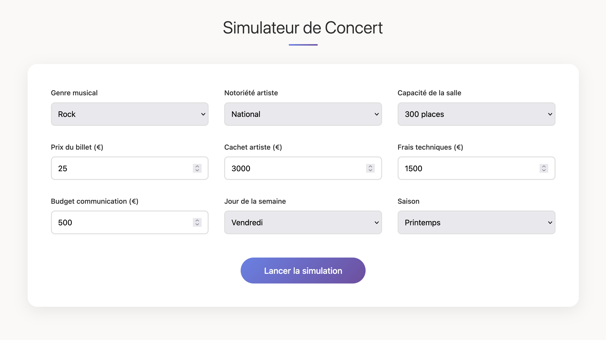
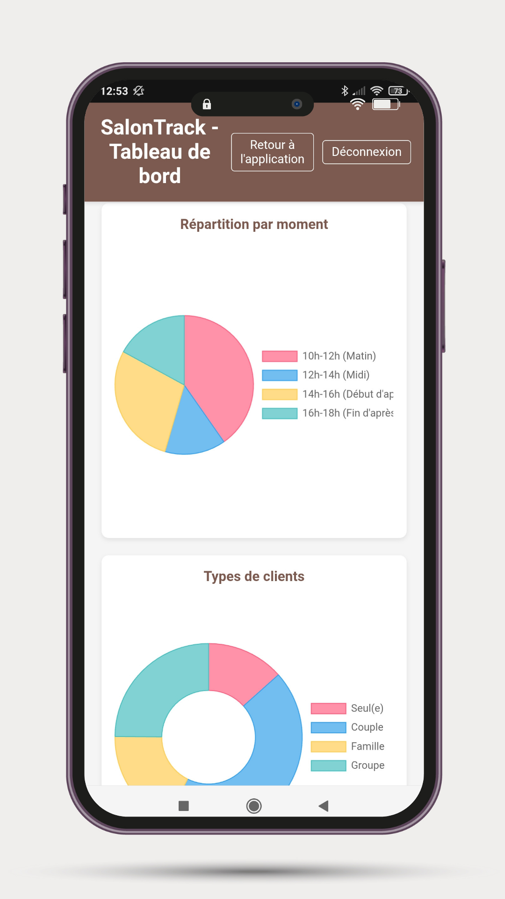
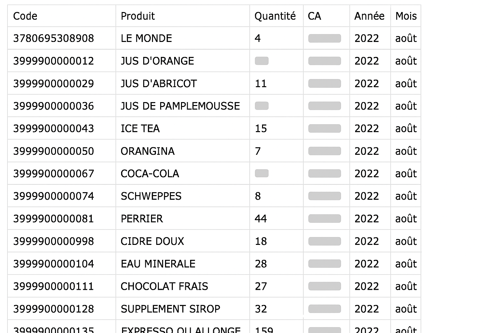
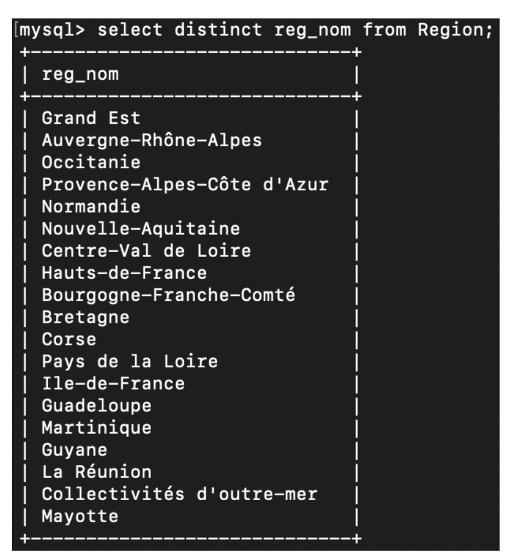
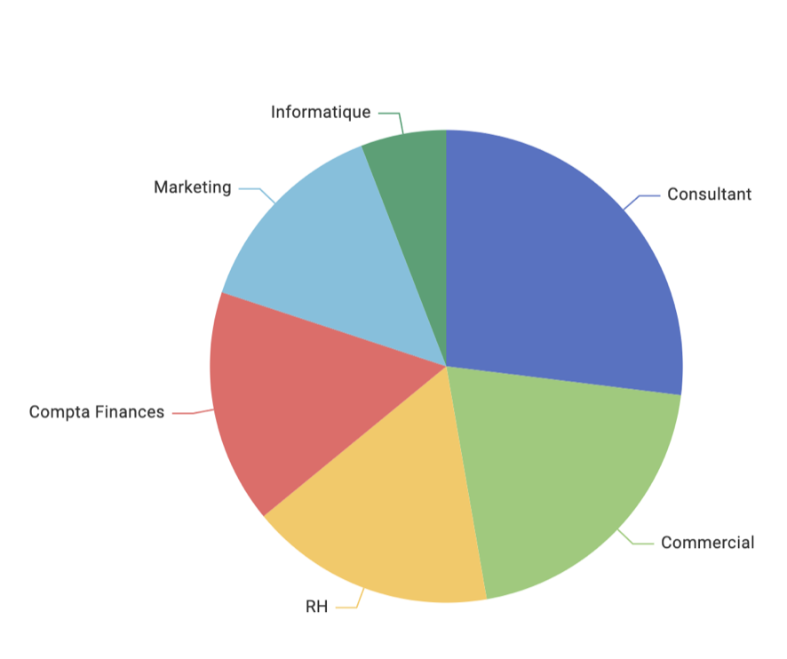
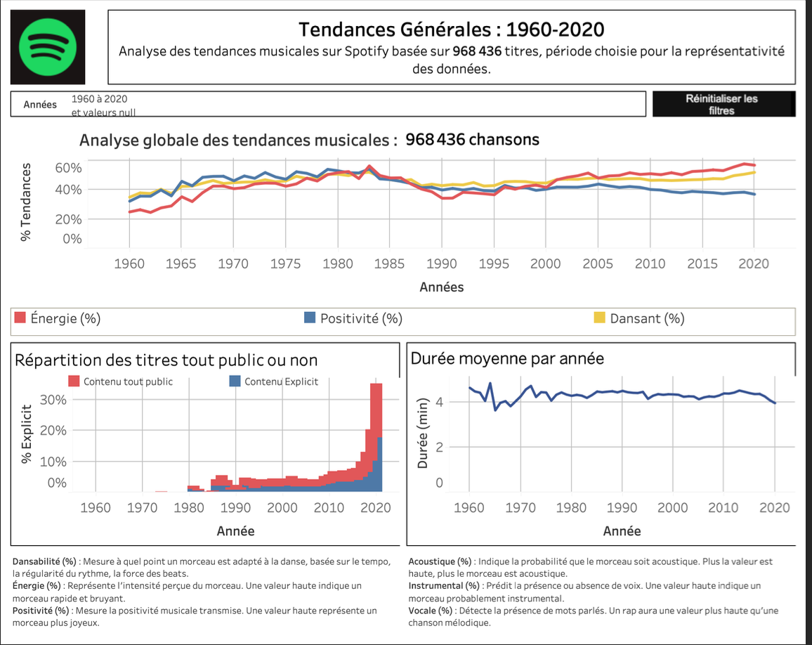
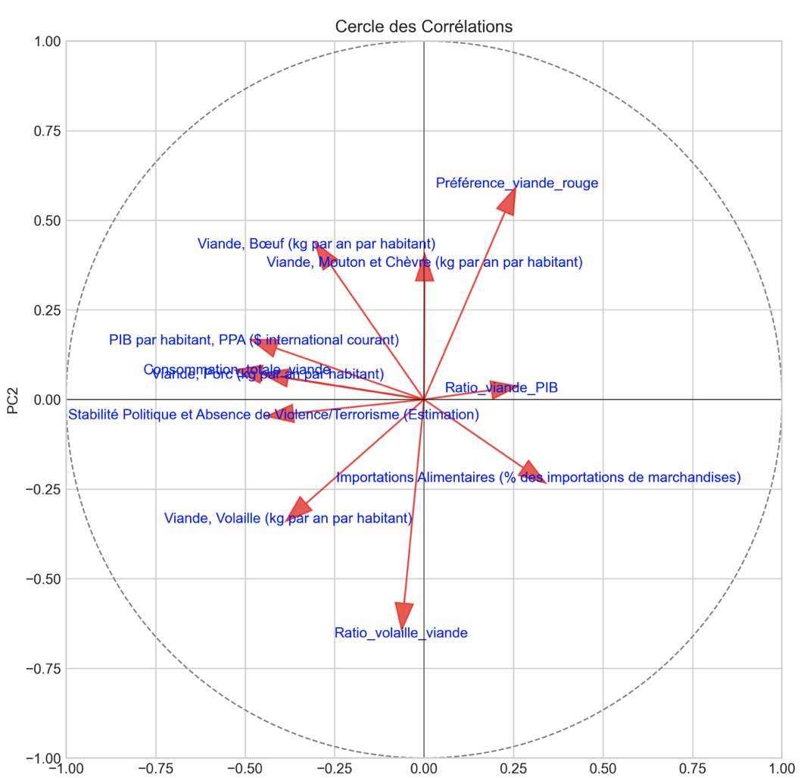

8 ans en médiation culturelle, puis formation en analyse de données. J'utilise les données pour aider les structures culturelles à mieux comprendre leurs publics et améliorer leurs projets. 11 projets professionnels durant ma formation mêlant SQL, Python, Power BI.
Télécharger mon CVMa connaissance du monde culturel et mes compétences en analyse de donnée me permettent d'adapter mes analyses aux vraies questions du terrain. L'objectif est que toutes les équipes puissent utiliser ce que je produis.
💼 Ouvert aux opportunités en CDI et Freelance

Un outil pour aider les programmateurs de salles de concert à tester différents scénarios de saison. Je connais les contraintes du métier, ici j'ai créé un simulateur généraliste et personnalisable que j'adapterai aux réalités métiers.
Voir le simulateur
Une application web pour suivre les parcours des visiteurs dans un musée. L'objectif : identifier ce qui fonctionne et ce qui pourrait être amélioré dans l'expérience de visite.
Lire l'article
4 ans de données de caisse inutilisables numériquement. J'ai écrit des scripts Python pour tout nettoyer et rendre ça exploitable. Maintenant le Musée peut analyser en profondeur les ventes de son salon de thé.
Lire l'article8 ans en médiation culturelle, voici ce que j'apporte au-delà des compétences techniques.
Patient et pédagogue, mes expériences auprès de publics variés m'ont appris à adapter mon discours.
Habitué à parler en public et à animer des groupes. Je sais ajuster mon discours selon à qui je parle.
8 ans à coordonner des projets avec plusieurs intervenants. Je sais organiser, prioriser et tenir les délais.
Je prends le temps de comprendre ce dont les gens ont vraiment besoin avant de me lancer.
J'ai changé de métier à 30 ans. Ça m'a appris à apprendre vite et à être à l'aise dans des environnements différents.
J'aime trouver des façons originales de présenter les données et chercher des angles d'analyse inattendus.

Conception et création de bases de données relationnelles avec requêtes SQL complexes sur 50 000 biens immobiliers. Maîtrise des jointures multiples.
Voir les livrables
Analyse des indicateurs de l'égalité femmes/hommes en respectant le RGPD. Intégration de données RH multi-sources.
Voir les livrables
Création d'un tableau de bord sur l'évolution de la musique avec storytelling. Analyse des propriétés techniques musicales.
Voir les livrables
Analyse de données multidimensionnelles avec ACP et visualisation statistique avancée. Intelligence commerciale et synthèse stratégique.
Voir les livrables